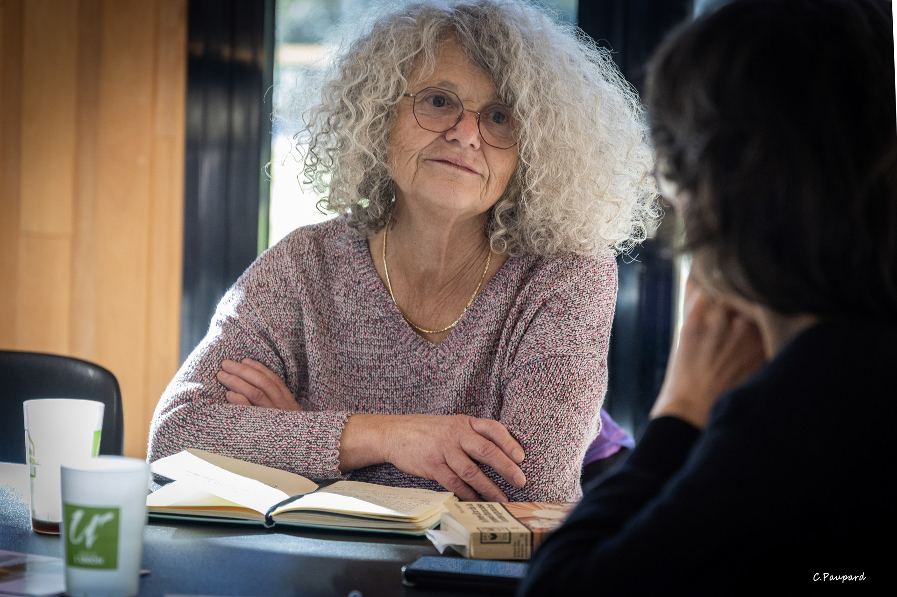

Écoute
Comprendre la demande avant de choisir les mots.
Qui suis-je ?
Professeur de mathématiques et de sciences physiques, autrice de textes littéraires, techniques et scientifiques, Marianne accompagne aujourd’hui celles et ceux qui souhaitent écrire, corriger ou transmettre.

Présentation
Ma première activité ? Professeur de mathématiques et de sciences physiques. En parallèle, j’ai toujours écrit et corrigé des documents, littéraires, techniques, scientifiques.
Aujourd’hui, je propose des prestations en écriture. Je relis, corrige et reformule, si nécessaire, vos thèses, rapports, romans. À votre écoute, je rédige pour vous discours, notes, lettres administratives ou personnelles, récits de vie, d’événements, de voyages et autres textes.
J’anime également des ateliers d’écriture inspirés de l’OULIPO, ludiques et accessibles à tous publics.
Spécialités
Comprendre la demande avant de choisir les mots.
Rendre le texte clair, structuré et utile.
Respecter chaque histoire, chaque document, chaque contexte.